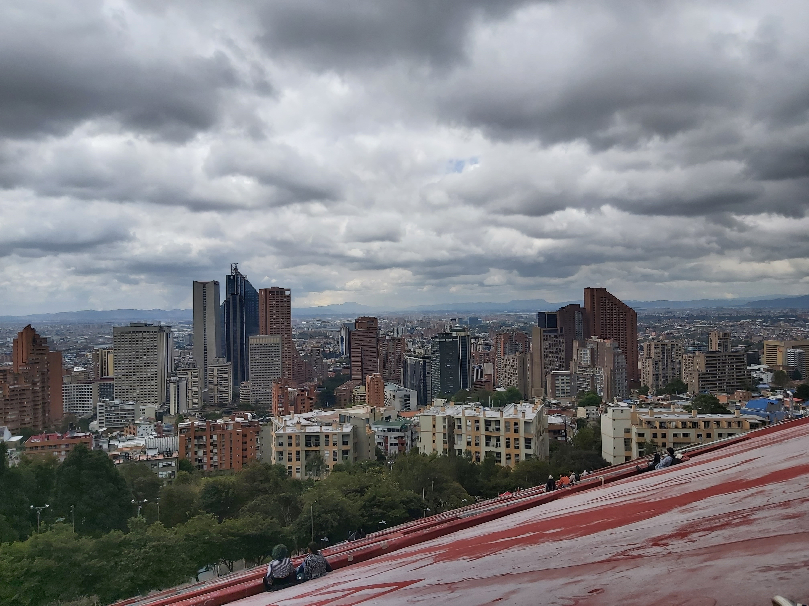
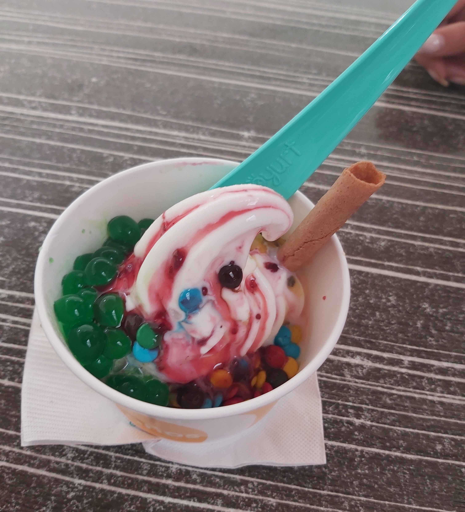
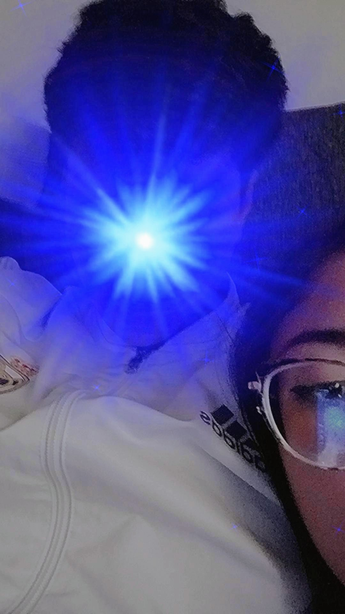
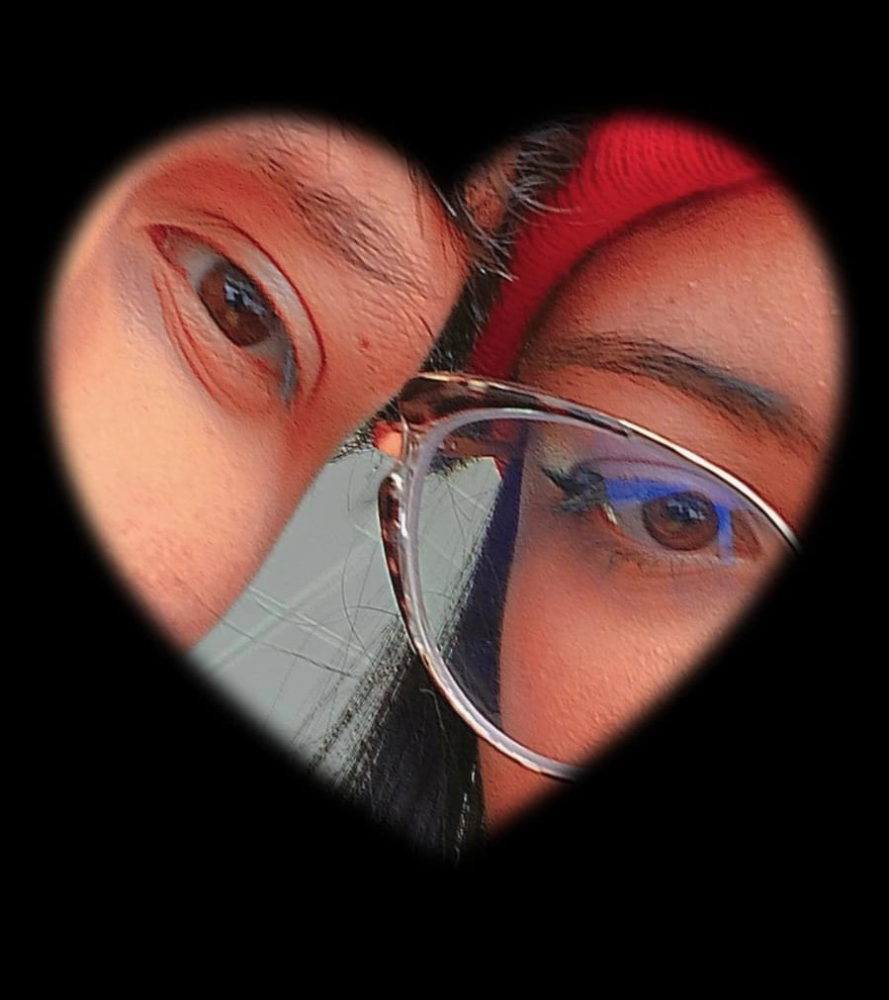
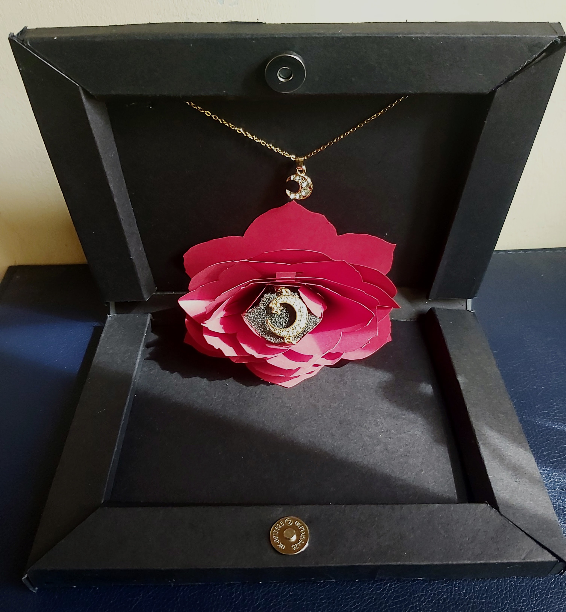
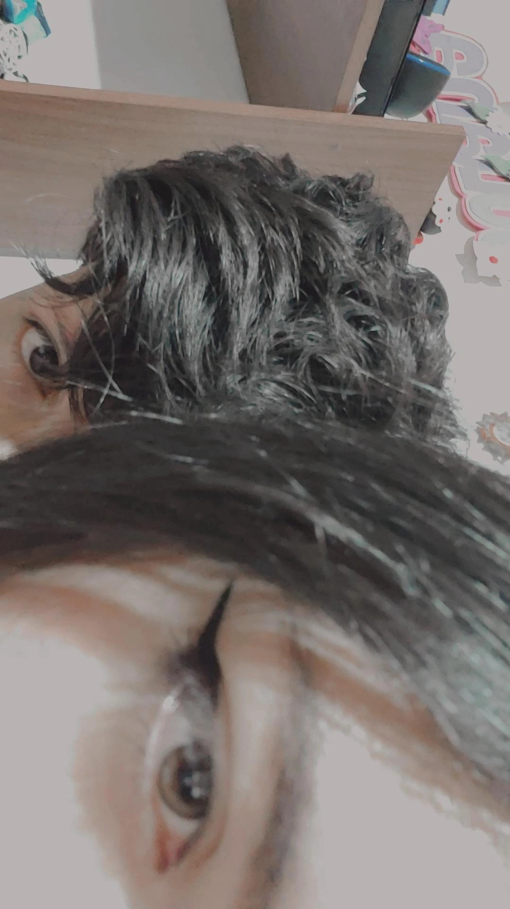
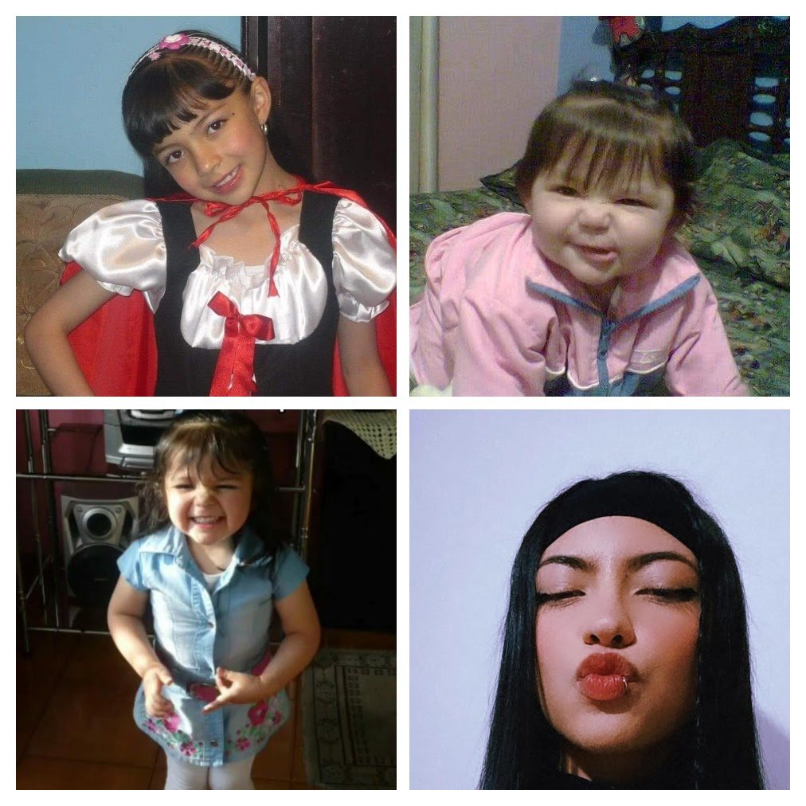
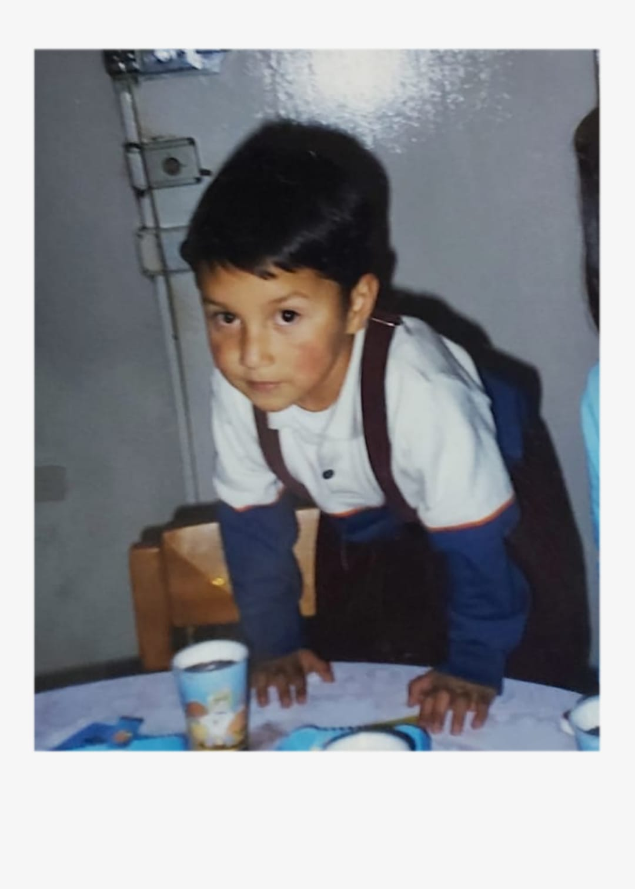
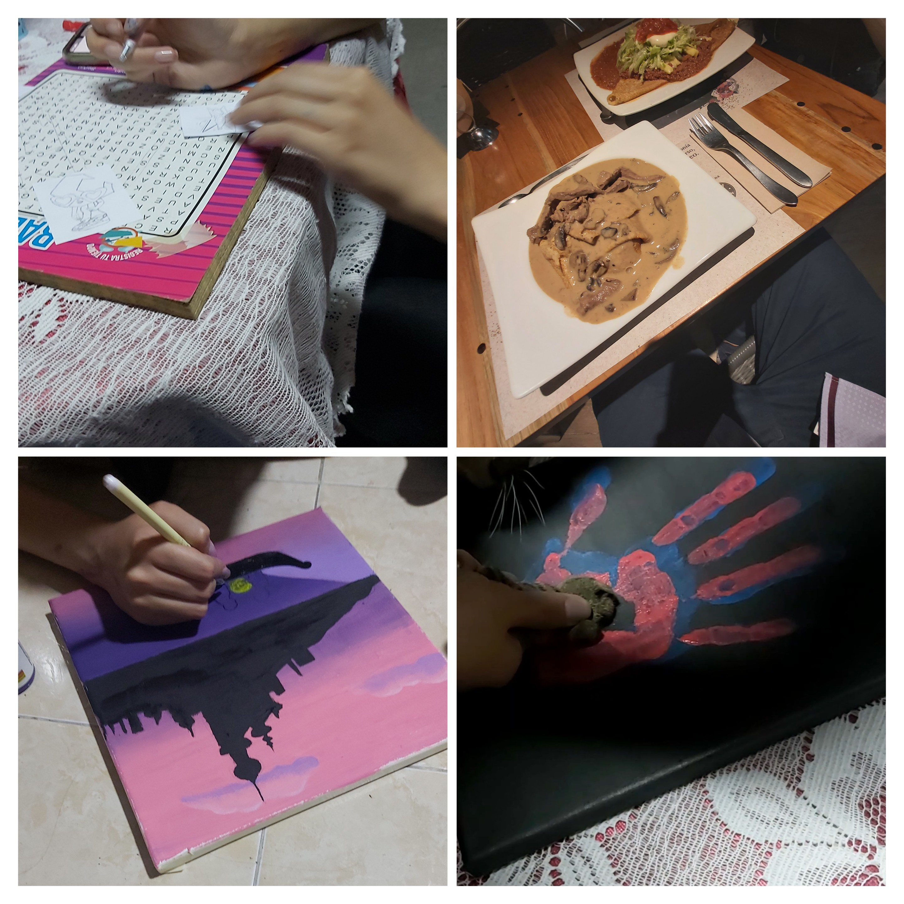

Nuestro inicio
Cuando mi cabeza no se puede expresar, siempre trato que mi corazón lo haga. Hoy quiero decirte todo lo que sintió mi corazón desde el día que te conoció.
Todo comienza el 31 de enero del 2023, la primera vez que te vi y me doy cuenta de que no fue una casualidad, que fueras la única que me fije desde el primer momento, no sabía tu nombre, así que te apode “la linda de gafas”. Sin embargo, nunca ocurrió nada, yo no buscaba absolutamente nada y siempre me decían que omitiera ese amor universitario, así fueras el tipo de mujer que me gustaba, nunca intente nada, así te viera de lunes a viernes, nunca cruzamos palabra y así pasaron varios meses.
Luego de mucho tiempo llego la primera interacciona aparte de los días de futbol o basketball, después de molestar por varios días con el 3 pa 3, el 18 de septiembre, sin haber hablado nunca, en medio de nervios, nuestros labios se encontraban por primera vez, a pesar de que durara un segundo, algo me decía que no sería la última. Se pasó todo el día y de regreso a casa recibí tu mensaje, con el que en realidad comenzó todo, hablamos unas horas en la noche y de la nada teníamos plan para el siguiente día.
Llegó nuestra primera salida el 19 de septiembre, fue complicada y hablamos varias veces de esto, tenía miedo, no sabía si tus intenciones eran verdaderas o solamente pasajeras, y si eran pasajeras, quería darme el tiempo para pensar bien las cosas, para no envolverme contigo y después sufrirte porque sabía que te seguiría viendo todos los días, fantasmas del pasado hacían que desconfiara de cada persona que quisiera entrar a mi vida, por eso fui muy reservado ese día, sin embargo, 2 cosas muy importantes me marcaron ahí, la primera cuando ya íbamos a entrar a la estación y me dijiste que no todas las personas eran iguales y algo en mí sintió que contigo podía ser diferente y la segunda, cuando estaba en mi casa y aún podía sentir tu olor y no podía parar de pensarte.
.png)
El 28 de septiembre fue el primer jueves de escapada, ese día me mostraste tus fotos de chiquita mientras íbamos en el bus y las conversaciones seguían sin ser fluidas, llegamos al centro comercial y allá siento que fue nuestra primera interacción más chévere, hablamos más, sentí que podía depositar más confianza en ti, dure como 3 horas incomunicado en el tm, pero había válido completamente la pena, cada vez sentía más cosas por ti.

Pasaron varios días de esa salida, aún seguía nervioso y con miedos, pero nos seguíamos conociendo y cada día me interesabas más, el 2 de noviembre decidimos pasar un rato juntos en la universidad, hablamos un rato y entre bromas, fue nuestro primer beso, fue curioso, pero cuando acabó, solo pensaba en volver a hacerlo.
El 5 de octubre no hubo clases y estaba en Bosa, habíamos quedado en jueves de escapada, estabas medio rara y no tenía idea por qué, yo necesitaba verte y me fui desde la casa de Zamir a Venecia, te esperé en el puente, te vi pasar por la esquina, estabas preciosa, pero me hice el bobo para que vinieras donde estaba yo, fuimos por un helado y nos quedamos en un parque, seguías rara y no me querías decir nada, pero me terminaste llevando a tu casa, vi a tu papá por primera vez, le tenía miedo (todavía jajaja) pero bueno, aclaramos lo del perro, estuvimos un rato en la terraza y luego me llevaste a tu cuarto, no sabes lo tanto que espere ese momento y como nunca voy a olvidar besarte por horas, me lleno tanto, al fin teníamos un momento a solas, “Desaparecer” siempre me va a recordar a ti y a ese día, fue el primer día de tantos que salí por esa puerta y no podía esperar para volver a entrar a estar contigo.

Hasta aquí te voy a nombrar las fechas exactas, ahora te voy a decir como después de la primera fase, me seguí enamorando de ti cada día más, vi en ti cosas que no había visto antes en nadie, experimente lo que es un amor genuino y recíproco, llego el momento en el que te vi distinta a las demás, solo pensaba en quedarme contigo para siempre, estar a tu lado me hacía olvidarme de todo y cuando no estábamos juntos no había nada que no recordara a ti, había encontrado lo que no andaba buscando, pero siempre había soñado.
Pasaban los días y aunque ya nos sentíamos como novios, yo aún no te lo pedía, al sentir que quería que fueras el amor más bonito de mi vida, quería que todo fuera perfecto, no tenía los medio para hacer todo lo que hubiera querido, dure algunos días intentando hacer algo para darte y representara el inicio de nuestra relación, con algo que nos representara, como lo era la media luna.
Después de oficializarlo no asimilaba que era el novio de la linda de gafas, veía en ti todo lo que soñaba, eras la mujer que físicamente me encantaba, que me enamoraban todas sus facetas, que admiraba absolutamente todo tu ser, me convertí en tu pareja, pero al mismo tiempo en tu mayor fanático, me enamore de esos labios, de tu pelo, de tu cara preciosa, de esos ojos que brillan tanto como la luna que tanto representa la relación, que iluminaron mi vida cuando todo estaba oscuro, me enamore de los momentos que pasamos juntos, me enamore de tu voz, me enamore de verte bailar y cantar las series que ves de niña. Le había encontrado el significado al amor de mi vida.
En el momento que decidí que quería ser tu novio me hice una promesa a mí mismo, quería cuidar todo de ti, que en mí encontraras confianza, encontraras paz, un lugar seguro, tú y tu niña interior, me prometí hacerte feliz, compartir mi vida a tu lado, no fallarte nunca, tratarte como una princesa, nunca dejar de darte detalles, que aunque ahorita no tenga los medios que quisiera para darte todo lo que mereces, sé que llegara el día y trabajaré para eso.
Nunca fui de expresar mis sentimientos a nadie; sin embargo, contigo siempre fue distinto, te doy las gracias por absolutamente todo, pero hay algo especial por lo que quiero agradecerte, te explico, cuando era un niño llegaba a mi casa, solo estaba la señora que nos ayudaba con el aseo, mi tía y mi papá trabajaban todo el día, mi hermano mayor no vivía en Bogotá y mis hermanos llegaban más tarde que yo, pero igual no les gustaba estar conmigo, lo único que esperaba yo era que llegara el domingo que descansara mi papá para pasar todo el día con él, salir cada fin de semana a tu casa me devolvió ese sentimiento de pasar el día con la persona que me ama, no me importaba pasar 2 horas de ida y 2 de vuelta en un transmilenio, solo para pasar tiempo contigo, porque es lo que me llena el alma, me devolviste muchos sentimientos que con el tiempo se habían ido y te lo voy a agradecer toda la vida.
Pasar tiempo contigo me genera paz, felicidad y muchas más cosas bonitas, hacer cosas juntos, conectar contigo, reír contigo, hablar de nuestras vidas, escuchar música juntos, ver algo juntos, salir a algún lado juntos, me llena de amor y de vida.
A tu lado todo es perfecto, es una sensación tan única estar a tu lado, que el resto del mundo no importa, que cuando no estoy contigo siempre estás presente, has sido la primera mujer con la que siento esto y nada me haría más feliz que fueras la única, fuiste la primera mujer que le pedí que fuera mi novia y aunque las palabras no me salieran, quiero que te quedes con la acción, además de mi tía y mi hermana fuiste a la primera mujer que me nacía ir a llevarte flores y que la pena de andar con ella en la calle valiera mierda, le pido a Dios es la canción que mejor puede definir este párrafo.

Hablando de canciones, la música ha sido fundamental en tu vida, le diste sentido a todas las letras bonitas, a todos los versos, cada vez que las escucho tú eres mi primer pensamiento.
Presiona aquiA veces la música sabe expresar todo lo que no te digo, te hice una playlist con muchas canciones que escuche a lo largo de mi vida, me recuerdan a ti. Hay más de 100 canciones, iré agregando cada que recuerde o aparezca una que te quiera dedicar y quisiera que tú lo hagas, cada que escuches una canción que no está aquí y te recuerde a mí, te recuerde a nosotros, ponla, quiero que cada vez que te sientas mal, y yo no pueda estar presente escuches estas canciones y que sepas que tienes a un hombre que te tiene presente todo el tiempo, que encontró en cada verso muchos de los significados del amor que te tiene, un hombre que te ama y que daría todo por ti.